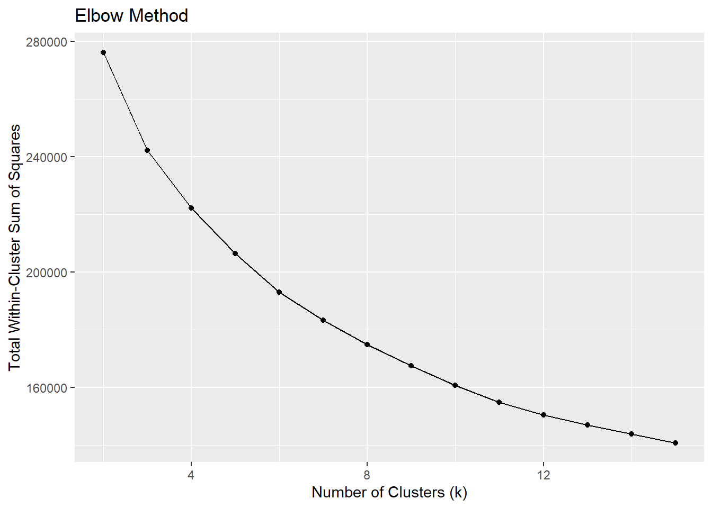

pacman::p_load(
pacman, tidyverse, lubridate, cluster, factoextra, DT, shiny, plotly
)Take-home Exercise 2 – Clustering Module Prototype
Overview
This take-home exercise develops a prototype of the Customer Segmentation Module for the final Shiny application.
The dataset is already structured at the customer level, meaning each row represents a unique customer with demographic, behavioural, engagement, and satisfaction attributes. Therefore, no transaction-level aggregation is required.
The purpose of this prototype is to:
Feature engineering from transaction-level data
Feasibility of k-means clustering
Interactive parameters (k and variable selection)
Visual outputs for cluster exploration
1 Getting Started
1.1 Installing and loading the packages
Before performing analysis, the required packages are loaded. These packages support data manipulation, clustering evaluation, and visualisation.
| Library | Description |
|---|---|
| pacman | Install and load multiple packages in one command. |
| tidyverse | Data wrangling + ggplot2 visualization workflow . |
| lubridate | Date parsing and date arithmetic. |
| cluster | Clustering evaluation utilities (e.g., silhouette). |
| factoextra | Helper functions for visualising clusters and PCA results . |
| DT | Interactive tables for cluster profile summaries in Shiny. |
| shiny | UI and server framework for integrating this module into the final Shiny app. |
| plotly | Interactive plotting for cluster maps and exploratory visuals. |
2 Data Preparation
2.1 Loading the Dataset
We first import the customer-level dataset and inspect its structure to confirm variable types.
customers <- read_csv("data/customer_data.csv")
glimpse(customers)Rows: 48,723
Columns: 54
$ customer_id <dbl> 93716481, 49020929, 52690950, 23199751, 619…
$ age <dbl> 44, 44, 45, 45, 44, 45, 44, 44, 45, 44, 44,…
$ gender <chr> "Male", "Male", "Male", "Male", "Female", "…
$ location <chr> "Pereira, Risaralda", "Cali, Valle del Cauc…
$ income_bracket <chr> "Very High", "Medium", "High", "High", "Med…
$ occupation <chr> "Engineer", "Construction Worker", "Constru…
$ education_level <chr> "Master", "Bachelor", "Bachelor", "High Sch…
$ marital_status <chr> "Married", "Married", "Married", "Single", …
$ household_size <dbl> 5, 2, 4, 2, 3, 4, 4, 3, 1, 3, 5, 3, 3, 7, 3…
$ acquisition_channel <chr> "Partnership", "Paid Ad", "Paid Ad", "Refer…
$ customer_segment <chr> "occasional", "regular", "inactive", "inact…
$ savings_account <lgl> TRUE, TRUE, TRUE, TRUE, TRUE, TRUE, TRUE, T…
$ credit_card <lgl> TRUE, FALSE, FALSE, FALSE, TRUE, TRUE, TRUE…
$ personal_loan <lgl> FALSE, FALSE, FALSE, FALSE, FALSE, FALSE, F…
$ investment_account <lgl> FALSE, FALSE, TRUE, TRUE, FALSE, TRUE, FALS…
$ insurance_product <lgl> TRUE, FALSE, TRUE, FALSE, FALSE, FALSE, FAL…
$ active_products <dbl> 1, 5, 3, 2, 1, 1, 1, 4, 2, 3, 1, 5, 3, 1, 1…
$ app_logins_frequency <dbl> 15, 30, 4, 15, 19, 15, 44, 22, 7, 11, 7, 30…
$ feature_usage_diversity <dbl> 3, 0, 4, 4, 1, 4, 6, 1, 1, 6, 3, 1, 2, 1, 3…
$ bill_payment_user <lgl> FALSE, TRUE, TRUE, TRUE, FALSE, TRUE, TRUE,…
$ auto_savings_enabled <lgl> FALSE, FALSE, FALSE, FALSE, FALSE, TRUE, FA…
$ credit_utilization_ratio <dbl> 0.17871029, NA, NA, NA, 0.40360553, 0.07786…
$ international_transactions <dbl> 1, 1, 1, 1, 0, 0, 0, 0, 0, 1, 0, 0, 0, 1, 0…
$ failed_transactions <dbl> 0, 0, 0, 1, 0, 0, 1, 1, 0, 0, 1, 0, 0, 1, 0…
$ tx_count <dbl> 76, 10, 10, 23, 18, 15, 24, 45, 134, 13, 18…
$ avg_tx_value <dbl> 1679872.4, 5445810.0, 640335.0, 660180.4, 1…
$ total_tx_volume <dbl> 127670300, 54458100, 6403350, 15184150, 262…
$ first_tx <date> 2023-01-05, 2023-02-05, 2023-01-31, 2023-0…
$ last_tx <date> 2023-12-25, 2023-12-20, 2023-12-12, 2023-1…
$ base_satisfaction <dbl> 9.213372, 6.073093, 8.198643, 7.529577, 6.6…
$ tx_satisfaction <dbl> 0.380, 0.050, 0.050, 0.115, 0.090, 0.075, 0…
$ product_satisfaction <dbl> 0.6, 0.2, 0.6, 0.4, 0.4, 0.6, 0.4, 0.4, 0.6…
$ satisfaction_score <dbl> 5, 3, 4, 4, 3, 4, 4, 4, 5, 4, 4, 5, 4, 3, 4…
$ nps_score <dbl> -7, -46, -29, -31, -47, -29, -34, -36, -4, …
$ last_survey_date <date> 2023-12-16, 2023-05-05, 2023-11-16, 2023-0…
$ support_tickets_count <dbl> 1, 1, 0, 2, 2, 1, 1, 0, 2, 0, 0, 2, 3, 1, 0…
$ resolved_tickets_ratio <dbl> 0.0000000, 1.0000000, 0.0000000, 0.5000000,…
$ app_store_rating <dbl> 3.5, 4.0, 5.0, 4.5, 4.0, 4.0, 5.0, 4.5, 4.5…
$ feedback_sentiment <chr> "Neutral", "Positive", "Positive", "Positiv…
$ feature_requests <chr> "Budgeting tools", NA, NA, "Cryptocurrency …
$ complaint_topics <chr> NA, NA, NA, NA, "App performance", NA, NA, …
$ clv_segment <chr> "Gold", "Bronze", "Gold", "Bronze", "Gold",…
$ monthly_transaction_count <dbl> 1.428571, 1.571429, 2.500000, 1.555556, 2.1…
$ average_transaction_value <dbl> 6054025.0, 2127413.6, 3575915.0, 1513353.6,…
$ total_transaction_volume <dbl> 60540250, 23401550, 35759150, 21186950, 116…
$ transaction_frequency <dbl> 0.03076923, 0.03293413, 0.05000000, 0.04778…
$ last_transaction_date <date> 2023-12-05, 2023-12-18, 2023-10-27, 2023-1…
$ preferred_transaction_type <chr> "Transfer", "Transfer", "Transfer", "Transf…
$ first_transaction_date <date> 2023-01-05, 2023-02-05, 2023-01-31, 2023-0…
$ weekend_transaction_ratio <dbl> 0.30000000, 0.18181818, 0.30000000, 0.14285…
$ avg_daily_transactions <dbl> 0.03076923, 0.03293413, 0.05000000, 0.04778…
$ customer_tenure <dbl> 11.633333, 11.500000, 8.766667, 10.733333, …
$ churn_probability <dbl> 0.3622688, 0.1817896, 0.3212651, 0.3366287,…
$ customer_lifetime_value <dbl> 312414808, 167022286, 19403711, 35978105, 3…2.2 Data Integrity Checks
2.2.1 Missing Values
Missing values may distort clustering results. Therefore, we inspect NA counts.
customers %>%
summarise(across(everything(), ~sum(is.na(.))))# A tibble: 1 × 54
customer_id age gender location income_bracket occupation education_level
<int> <int> <int> <int> <int> <int> <int>
1 0 0 0 0 0 0 0
# ℹ 47 more variables: marital_status <int>, household_size <int>,
# acquisition_channel <int>, customer_segment <int>, savings_account <int>,
# credit_card <int>, personal_loan <int>, investment_account <int>,
# insurance_product <int>, active_products <int>, app_logins_frequency <int>,
# feature_usage_diversity <int>, bill_payment_user <int>,
# auto_savings_enabled <int>, credit_utilization_ratio <int>,
# international_transactions <int>, failed_transactions <int>, …The missing value inspection shows that all 54 variables contain zero missing entries.
This indicates that the dataset is fully observed at the customer level. No imputation or row removal procedures are required.
2.2.2 Duplicate Records
Since clustering is performed at the customer level, duplicate rows would bias the segmentation.
sum(duplicated(customers))[1] 0The result indicates that no duplicate rows exist, confirming dataset integrity.
3 Variable Selection for Clustering
Clustering should rely on behavioural and engagement signals, rather than identifiers or pre-existing labels.
The following variables are selected:
cluster_vars <- c(
"monthly_transaction_count",
"average_transaction_value",
"total_transaction_volume",
"transaction_frequency",
"avg_daily_transactions",
"app_logins_frequency",
"feature_usage_diversity",
"active_products",
"credit_utilization_ratio",
"weekend_transaction_ratio",
"customer_tenure"
)These variables capture:
Transaction intensity
Spending behaviour
App engagement
Product breadth
Credit behaviour
Customer tenure
4 Preprocessing
Clustering algorithms such as K-means rely on Euclidean distance. Therefore, proper preprocessing is essential to:
Prevent scale dominance
Reduce skewness effects
Ensure fair distance computation
The preprocessing pipeline follows three steps:
Preserve original data for interpretation
Apply log transformation to skewed variables
Standardise variables before clustering
4.1 Create Original Dataset
Before transformation, we preserve the original numeric values. This dataset will later be used to compute cluster profile summaries.
df_original <- customers %>%
select(all_of(cluster_vars)) %>%
mutate(across(everything(), as.numeric)) %>%
drop_na()
dim(df_original)[1] 30460 114.2 Skewness Assessment
Before applying log transformation, we quantify skewness to determine whether transformation is necessary.
library(e1071)
skew_table <- df_original %>%
summarise(across(everything(), ~skewness(.))) %>%
pivot_longer(everything(), names_to = "variable", values_to = "skewness") %>%
arrange(desc(abs(skewness)))
skew_table# A tibble: 11 × 2
variable skewness
<chr> <dbl>
1 total_transaction_volume 89.4
2 monthly_transaction_count 40.9
3 transaction_frequency 40.9
4 avg_daily_transactions 40.9
5 customer_tenure -2.22
6 average_transaction_value 2.22
7 app_logins_frequency 0.932
8 active_products 0.909
9 credit_utilization_ratio 0.592
10 feature_usage_diversity 0.414
11 weekend_transaction_ratio 0.2934.3 Interpretation
Variables with absolute skewness > 1 are considered highly skewed and candidates for log transformation.
skew_vars <- skew_table %>%
filter(abs(skewness) > 1) %>%
pull(variable)
skew_vars[1] "total_transaction_volume" "monthly_transaction_count"
[3] "transaction_frequency" "avg_daily_transactions"
[5] "customer_tenure" "average_transaction_value"4.4 Log Transformation
Since the skewness assessment identified highly skewed variables, we apply log transformation only to those variables.
We use log1p(x) (log(1 + x)) to safely handle zero values.
df_model <- df_original %>%
mutate(across(all_of(skew_vars), ~log1p(.)))4.5 Skewness Comparison
To validate the effectiveness of transformation, we recompute skewness after applying log transformation.
skew_after <- df_model %>%
summarise(across(everything(), ~skewness(.))) %>%
pivot_longer(everything(), names_to = "variable", values_to = "skew_after")
skew_compare <- skew_table %>%
left_join(skew_after, by = "variable")
skew_compare# A tibble: 11 × 3
variable skewness skew_after
<chr> <dbl> <dbl>
1 total_transaction_volume 89.4 0.726
2 monthly_transaction_count 40.9 3.14
3 transaction_frequency 40.9 8.23
4 avg_daily_transactions 40.9 8.23
5 customer_tenure -2.22 -2.63
6 average_transaction_value 2.22 0.232
7 app_logins_frequency 0.932 0.932
8 active_products 0.909 0.909
9 credit_utilization_ratio 0.592 0.592
10 feature_usage_diversity 0.414 0.414
11 weekend_transaction_ratio 0.293 0.293This confirms that transformation improved distribution symmetry without over-transforming already well-behaved variables.
4.6 Standardisation
K-means clustering relies on Euclidean distance, which is sensitive to variable scale.
Without standardisation:
Variables with larger magnitude (e.g., transaction volume) would dominate distance computation.
Smaller-scale variables (e.g., ratios) would have negligible influence.
Therefore, we apply z-score scaling.
df_scaled <- scale(df_model)5 Clustering Implementation
With preprocessing completed, we proceed to implement clustering using K-means.
K-means is selected because:
It is computationally efficient
It is suitable for numeric, standardised variables
It integrates well with interactive Shiny applications
It allows user-controlled selection of
k
5.1 Determining Optimal Number of Clusters
Before fixing k, we evaluate cluster compactness using the Elbow Method.
The Elbow Method examines the total within-cluster sum of squares (WSS) as k increases.

set.seed(2022)
wss <- map_dbl(2:15, function(k){
kmeans(df_scaled, centers = k, nstart = 20)$tot.withinss
})
elbow_df <- tibble(
k = 2:15,
wss = wss
)
ggplot(elbow_df, aes(k, wss)) +
geom_line() +
geom_point() +
labs(
title = "Elbow Method",
x = "Number of Clusters (k)",
y = "Total Within-Cluster Sum of Squares"
)